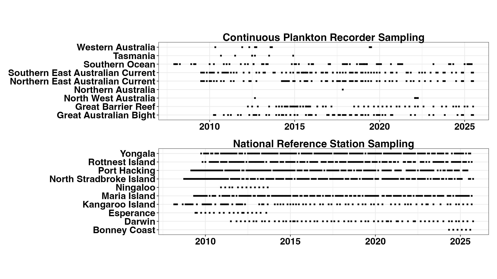
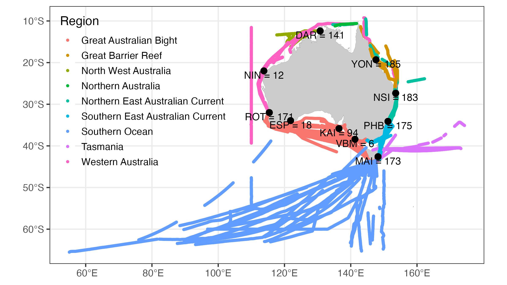
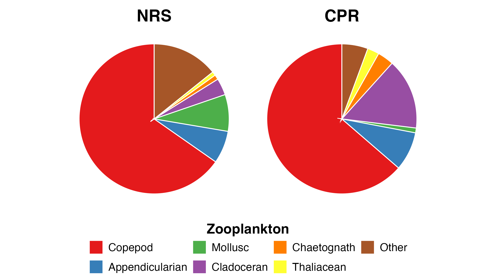
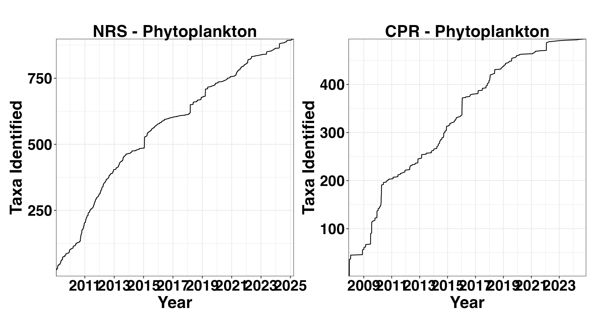
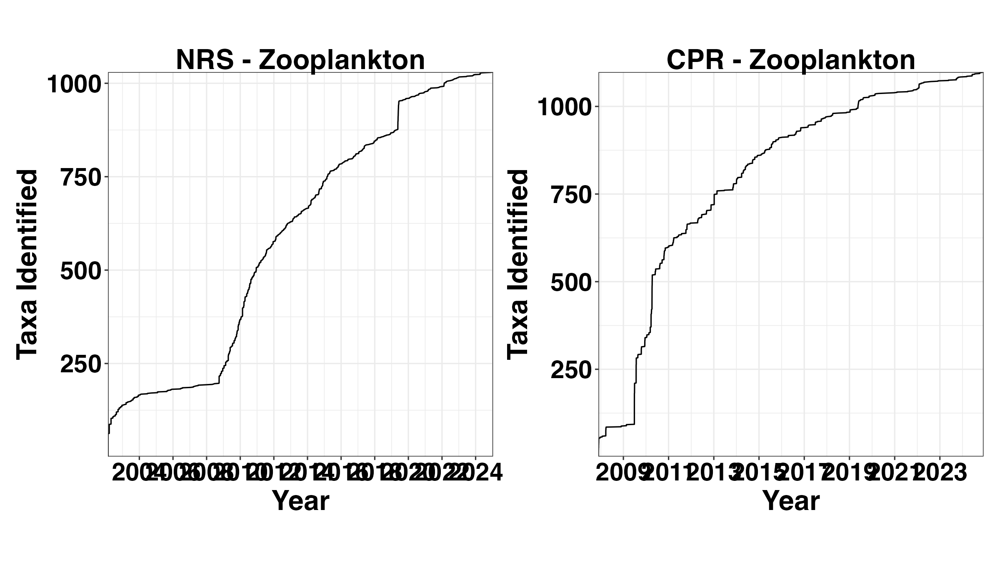

The planktonr package provides access to plankton and
biogeochemical data collected by the Integrated Marine Observing System
(IMOS) around Australia. This vignette introduces the main data sources
and demonstrates how to visualise sampling effort and taxonomic
coverage.
The NRS network consists of nine coastal monitoring stations around Australia that collect plankton, biogeochemical, and physical oceanographic data. Most stations sample monthly using:
Stations include: Darwin (DAR), Yongala (YON), North Stradbroke Island (NSI), Port Hacking (PHB), Maria Island (MAI), Rottnest Island (ROT), Esperance (ESP), Ningaloo (NIN), and Kangaroo Island (KAI).
Some stations have limited sampling: * Darwin samples quarterly to capture monsoonal variability * Kangaroo Island samples 5-6 times per year due to weather constraints * Esperance and Ningaloo were discontinued after initial sampling periods
The CPR is a high-speed plankton sampler towed behind ships of opportunity at ~10 m depth. It samples plankton continuously, with each sample representing approximately 3 nautical miles (~5.6 km).
The CPR primarily samples in: * The Great Barrier Reef region * The East Australian Current region * Bass Strait and the South-east region
CPR sampling is quarterly in main areas of interest and more ad-hoc in other regions. Unlike NRS samples which are collected during daylight hours, CPR samples are collected day and night as ships operate continuously.
The sampling at the National Reference Stations is predominantly monthly. Darwin samples on a quarterly basis and completes multiple trips across the tidal cycle. Kangaroo Island sampling is restricted to 5-6 times per year by sea conditions.
The Continuous Plankton Recorder samples quarterly through our main areas of interest (the Great Barrier Reef and the East Australian Current) and on a more ad-hoc basis in other regions, depending on ship availability.
datCPR <- pr_get_CPRTrips()
datNRS <- pr_get_NRSTrips()
ggCPR <- planktonr::pr_plot_Gantt(datCPR)
ggNRS <- planktonr::pr_plot_Gantt(datNRS)
wrap_plots(ggCPR, ggNRS, ncol = 1) &
theme(text = ggplot2::element_text(size = 12, face = "bold"))
The National Reference Stations are situated throughout the coastal region of Australia, with most Marine Bioregions having at least one station. The Western Australian stations at Ningaloo and Esperance were discontinued after an initial sampling period due to logistical constraints.
The CPR tracks are also more sparse in Western Australia as shipping options are limited. CPR sampling is concentrated along major shipping routes, particularly the east coast and Bass Strait.
df <- pr_get_ProgressMapData(Survey = c("NRS", "CPR"))
pr_plot_ProgressMap(df)
We can learn a lot about the community structure of plankton by examining functional groups. These pie charts also show how sampling methods impact what we find in the samples.
Functional groups represent taxa with similar ecological roles or morphological characteristics. For example: * Phytoplankton: Centric diatoms, pennate diatoms, dinoflagellates, cyanobacteria * Zooplankton: Copepods, appendicularians, chaetognaths, molluscs
Centric diatoms dominate in the NRS samples, whilst pennate diatoms become more important in the CPR samples. This likely reflects differences in sampling depth and method:
p1 <- pr_plot_PieFG(pr_get_FuncGroups(Survey = "NRS", Type = "Phytoplankton"))
p2 <- pr_plot_PieFG(pr_get_FuncGroups(Survey = "CPR", Type = "Phytoplankton"))
(wrap_plots(p1, p2, guides = "collect", ncol = 2) &
theme(text = element_text(size = 16), legend.position = "bottom",
plot.title = element_text(face = "bold")))Copepods dominate both the CPR and the NRS net samples, which is typical for marine zooplankton communities. However, the relative abundance of other groups differs:
These differences reflect the different mesh sizes and sampling methods: * NRS: 100 µm mesh net, vertical tows (0-50 m) * CPR: Silk mesh (~270 µm), horizontal tow at ~10 m
p3 <- pr_plot_PieFG(pr_get_FuncGroups(Survey = "NRS", Type = "Zooplankton"))
p4 <- pr_plot_PieFG(pr_get_FuncGroups(Survey = "CPR", Type = "Zooplankton"))
(wrap_plots(p3, p4, guides = "collect", ncol = 2) &
theme(text = element_text(size = 16), legend.position = "bottom",
plot.title = element_text(face = "bold")))
Over the course of the surveys since 2009, taxonomic resolution has improved through analyst training and exposure to diverse assemblages. We are now identifying:
Zooplankton diversity is generally higher than phytoplankton diversity because: * Zooplankton are larger and morphological differences between species are more definitive * Zooplankton identification includes life stages (nauplii, copepodites, adults) and sex * Zooplankton sampling captures a wider size range of organisms
These accumulation curves show the cumulative number of taxa identified over time as sampling effort increases. The curves are not yet asymptotic, suggesting more taxa will be discovered with continued sampling.
PSpNRSAccum <- pr_get_TaxaAccum(Survey = "NRS", Type = "Phytoplankton")
PSpCPRAccum <- pr_get_TaxaAccum(Survey = "CPR", Type = "Phytoplankton")
p1 <- pr_plot_TaxaAccum(PSpNRSAccum)
p2 <- pr_plot_TaxaAccum(PSpCPRAccum)
wrap_plots(p1, p2, ncol = 2) &
theme(text = element_text(size = 16, face = "bold"),
aspect.ratio = 1)
The higher taxonomic diversity in zooplankton is evident in these accumulation curves. The CPR has now identified over 1000 zooplankton taxa, while the NRS continues to add new taxa regularly.
ZSpNRSAccum <- pr_get_TaxaAccum(Survey = "NRS", Type = "Zooplankton")
ZSpCPRAccum <- pr_get_TaxaAccum(Survey = "CPR", Type = "Zooplankton")
p3 <- pr_plot_TaxaAccum(ZSpNRSAccum)
p4 <- pr_plot_TaxaAccum(ZSpCPRAccum)
wrap_plots(p3, p4, ncol = 2) &
theme(text = element_text(size = 16, face = "bold"),
aspect.ratio = 1) 